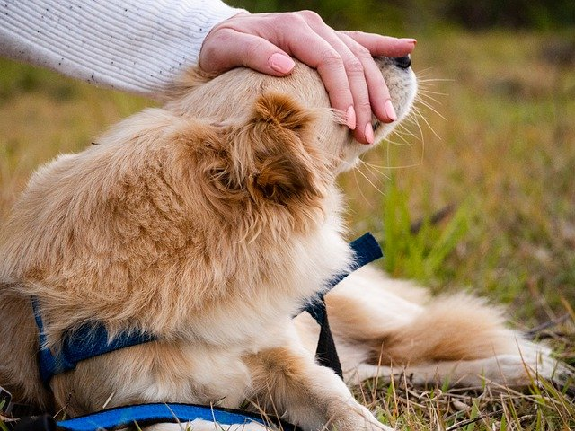

Pet Cuidado & Cia
Dicas
Muitas pessoas tem dúvida quanto ao adestramento ou a higiene do pet,
por isso nesse post foi separado algumas dicas simples para ajudar no dia a dia.

Higiene
Assim como os humanos, os pets precisam, de um ambiente
limpo para se manterem saudáveis. Como se sabe, uma
quantidade significativa de bactérias e parasitas se alojam nos
locais por onde os animais transitam.
Adestramento
Como adestrar cachorro pode ser uma atividade misteriosa,
é preciso entender o máximo possível sobre o assunto.
Principalmente em momentos em que passamos mais tempo
em casa, o pet sente a mudança e, consequentemente, ambos
já não sabem mais o que fazer para passar o tempo juntos.